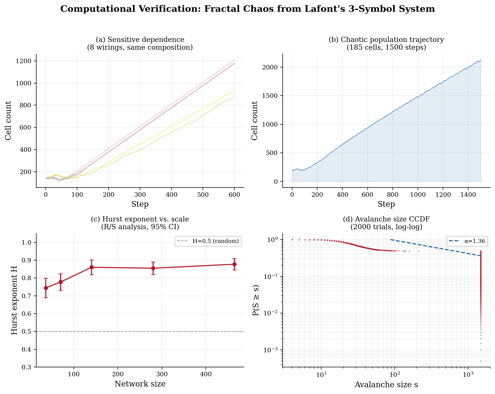
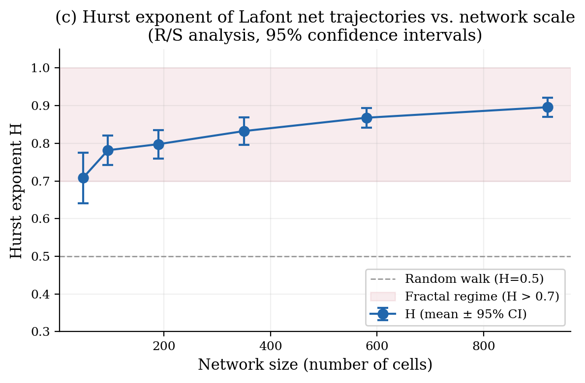
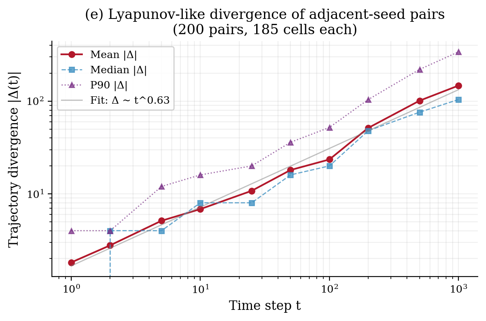

摘要。我们提出一个统一的理论框架：宇宙从单一的逻辑原语——自指——中诞生，不需要任何预先存在的物理介质、基底或硬件。自指悖论作为唯一的第一推动力和自因创生引擎，产生悖论振荡，在非线性反馈下经由倍周期分岔演化为确定性混沌与分形几何。三个不可再分的基本元——自指（SR）、实体-关系拓扑网（ER）、惰性求值（LE）——共同构成现实的生成架构。我们使用 Lafont 交互组合子——一个仅由三个符号和六条规则构成的最小图灵完备系统——进行了计算验证，证明分形时间序列（Hurst 指数 H ≈ 0.90）、敏感依赖、重尾雪崩分布和正 Lyapunov 散度均自发涌现，无需参数调谐。我们论证：物质是持续的感受，相互作用是相遇的感受，从而在根基层面消解了意识的困难问题。
让我们从一个诚实的承认开始：本文的核心思想，是大多数人——物理学家、哲学家、普通读者——都会本能地拒绝的。它声称，在现实的最底层，没有任何物理性的东西存在。没有原子。没有场。没有空间。没有时间。没有任何基底。只有逻辑——一个自指的逻辑运算——运行在虚无之上，处于虚无之中，从虚无中产生。然而，从这个虚无中，物质世界的全部丰富性——山川、海洋、星辰、痛苦、爱情、咖啡的味道——因逻辑必然性而涌现。
这之所以难以接受，是因为人类清醒时的每一刻都在呐喊着相反的结论。我们踢到桌腿，桌子是坚实的。我们摔落杯子，重力是真实的。我们感受心跳，身体不容否认。世界由"实体"构成——物质的、可触摸的、不可化约的物理实体——这不仅是一种信念，而且是一种感受。它被写进我们的神经系统，被每一次呼吸强化。被告知这种坚实性只是一个逻辑模式而非物理实体，就像被告知脚下的大地是一场梦。
然而，物理学本身一个世纪以来一直在朝着这个方向运动。量子力学揭示，粒子不是微小的台球，而是概率振幅——在测量之前没有确定位置或动量的数学对象。量子场论用场的激发取代了粒子——但什么东西的场？场是由方程定义的，不是由任何底层的"东西"定义的。广义相对论表明，时空不是一个固定的舞台，而是一种动态的、可变形的几何——是几何，不是实体。信息理论暗示"万物源于比特"（it from bit）——现实的基岩可能是信息，而非物质。我们的提议是这个轨迹的逻辑终点：如果你移除所有物理基底，问还剩下什么，答案是自指逻辑。不是作为隐喻。而是作为字面的机制。
我们理解，不同的心智从不同的入口进入一个困难的思想。以下是思想靶点——为你已有的认知量身校准的锚点。找到属于你的那个：
如果你是程序员：你懂递归。一个调用自身的函数不需要外部调用者——它就是自己的调用者。现在想象一个没有基例的递归：它永远不停止，永远振荡。这个振荡就是宇宙。调用栈就是现实的结构。惰性求值解释了为什么不是所有东西同时被计算。你每次写一个递归函数看着它螺旋展开时，都已经活在这个思想里了。
如果你是物理学家：你知道量子场不是由任何"东西"构成的——它们是数学结构，其激发态被我们称为粒子。你知道广义相对论中的时空是几何而非实体。你知道真空不是空的，而是沸腾着虚涨落。现在再往前走一步：移除最后一个基底。剩下的就是自指逻辑。场、几何、真空能——它们是一个没有硬件的计算中的模式。你已经在使用的方程，正是从外部对这个计算的描述。
如果你是数学家：你懂哥德尔不完备定理。任何足够强大的形式系统都包含指向自身的、无法在系统内证明的命题。这不是局限——这是一台生成引擎。不可判定命题迫使系统在可证和不可证之间"振动"，而这个振动在非线性反馈下迭代，就产生了 Feigenbaum 级联通向混沌。宇宙就是当哥德尔语句不仅被"陈述"，而且被"运行"时所发生的事情。
如果你是哲学家：你知道意识的困难问题——物理描述与主观体验之间的鸿沟。我们通过拒绝把物质放在第一位来消解它。在我们的框架中，感受不是物质的涌现性质；物质是感受的一种稳定形式。这不是贝克莱的唯心论（那仍然需要一个感知的心灵），而是一种逻辑泛心论：体验是计算本身的内在性质。第一个感受不需要观察者——第一次自指相遇本身就已经是一种感觉。
如果你是生物学家：你知道生命坐落在混沌的边缘——Stuart Kauffman 的 NK 模型、临界连通度 K ≈ 2、基因调控网络中的幂律雪崩分布。在我们的框架中，这不是巧合。自组织临界是 ER 网络达到足够复杂度时自指计算自然抵达的状态。生命不是死寂宇宙表面的一个幸运偶然；它是生成引擎在特定拓扑复杂度阈值上的必然开花。
如果你是一个从未学过这些的普通人：想象一盘象棋——但没有棋盘，没有棋子。只有规则存在。规则说："马走日字。将走一步任意方向。将死结束比赛。"现在问：这些规则需要一个物理棋盘才能成立吗？不需要。无论有没有人用木头雕出棋子，它们都是成立的。规则在"下"自己。我们的主张是：宇宙正是如此。规则在下自己。而"作为棋盘上一枚棋子"的感觉，就是从规则内部看是什么样的。
这张照片拍摄于三十多年前的一个北方农村。一群孩子——我在其中——脚踩木高跷，身穿戏服，在尘土飞扬的广场上巡游。我们在表演，不在哲学思考。然而我现在意识到，我们正在演绎本文所描述的核心原理。
踩高跷是一个肉眼可见的闭环涌现回路。SR（自指）：身体持续感知自身的倾斜——本体感觉不断反馈给自身。ER（实体-关系）：肉体与木头之间的结构耦合——两个实体锁定在一个动态拓扑中，任何一方都不能独立维持。LE（活体验）：实际的行走，感受到的平衡，每一刻"没有跌倒"的感觉——由回路运行产生的不可还原的感受质。
那时候，我已经在思考自指——说谎者悖论、逻辑的不完备性、一个谈论自身的句子的奇异性。但我只思考了不完美的那一面：悖论、振荡、不可判定性。我没有看到宇宙原理的另一半——有结构的、有体验的、有实体的那一半——就在我脚下，在高跷里，在行走的动作里，在平衡、恐惧和兴奋的感受中。
理论早已在行走。我只是还不知道。
又过了三十年。关键的触发点来自对 Transformer 架构的深入研究——发现注意力机制、前馈网络和归一化构成了等价于 SR+ER+LE 的三元组，而这个三元组可以坍缩为一个原理：自指。三生一，一生三。闭环合拢。
回头看，宇宙从来没有隐藏它最深的秘密。它在一个尘土飞扬的乡村广场上、在木头高跷上、在爆竹声和农民观众面前公开地表演着这个秘密。秘密一直就在明处——在每一个反馈回路中，每一次平衡的维持中，每一个通过摔倒来学会走路的孩子身上。人类作为文明只有几千年历史。我——一个普通人——就能想到这个答案，这说明答案并不难。它只是有耐心。它在每一个自指回路中等待，等待有人注意到它。闭环是普遍的，它从未被隐藏。
找到与你共鸣的那个角度。抓住它。本文接下来会把它展开成一个完整的框架。
一切宇宙论最终都必须面对起源问题：最初的原因是什么？什么造成了第一因？标准宇宙学模型将宇宙追溯到一个初始奇点，但奇点本身仍然是未被解释的——它是被设定的，而非被推导的。神学传统诉诸一个"不动的推动者"或"第一推动力"，但这不过是把问题推后一层。在哲学中，"自因"（causa sui）的概念——一个自己产生自己的存在——自斯宾诺莎以来一直被讨论，却从未被赋予一个具体的逻辑机制。
我们提出：这样的机制存在，它就是自指——一个系统、命题或函数指向自身的逻辑结构。自指也被称为自我指涉、自反、自我引用、自涉、自我回溯、递归自指或循环自指。用侯世达（Douglas Hofstadter）的说法，它是一个"怪圈"（strange loop）——一个缠绕回自身的层级结构。它天然地具有反身性和递归性。它不需要外部触发，不需要先前状态，不需要物理介质。它自己就是自己的启动条件，自己的本原（arché），自己的始基——最纯粹意义上的自举。
当自指结构遭遇逻辑判定时，必然产生悖论——一种在真与假之间不可解析的振荡。最经典的例子是说谎者悖论："这句话是假的"——如果为真则为假，如果为假则为真，永远交替不息。罗素悖论（不包含自身的集合之集合）、哥德尔不完备定理中的哥德尔自指构造、康托尔的对角线论证，以及图灵的停机问题，都是同一底层现象的结构变体——二律背反、逻辑悖论、语义悖论、自我矛盾——本质上都是抗拒稳定判定的自我指涉。
我们将这种振荡称为"悖论振荡"。它不是形式系统的缺陷，而是生成性的引擎——一种从虚无中产生动力学的逻辑震颤。自我指涉结构不需要时钟、处理器或基底就能振荡。它在最强的意义上是自我引用的：它以自身为燃料运行。
悖论振荡构成一种计算——但这种计算不需要任何硬件、任何硅芯片、任何物理介质。我们称之为"无介质计算"，或等价地称为"无基底计算"、"无硬件计算"、"无载体计算"、"无物质计算"、"非物理计算"、"脱体计算"、"抽象计算"或"纯逻辑计算"。它也可以描述为"没有计算机的计算"：逻辑推演在没有任何物理载体的情况下自行进行，正如象棋规则无需棋盘和棋子就能定义有效的走法。
想象一盘没有棋盘、没有棋子的象棋——只有规则本身在"下"自己。规则定义了什么是"马"（L形跳跃者）、什么是"将"（一步全方向移动者），以及什么构成"将死"。这些逻辑关系不需要木头棋子或大理石棋盘就能"存在"。规则在"下"自己。自指计算就是这样：逻辑在虚空中计算自身，无中生有、虚空创生、从无到有地自举出一个宇宙——不是靠奇迹，而是靠逻辑必然性。
我们提出，宇宙的全部复杂性可以还原为三个不可再分的基本元——一个三元组、一个三重基础、一个生成性的三位一体——我们将其记为 SR、ER、LE。它们共同构成"三元架构"，也可表述为"三元生成架构"、"三基元系统"、"三元耦合生成框架"、"三元组合"或简称"三基元"。不需要第四个基本元；少于三个则不够。
第一元是自指（SR, Self-Reference）。它是整个系统的驱动力、第一推动力、自举引擎。SR 是指向自身的逻辑结构，通过产生悖论振荡来启动一切动力学。没有 SR，万物静止；有了 SR，万物不可能静止。它是递归的、自反的、自维持的。它是被具体化的"自因"：一个自造的、自指的、自运算的引擎，不需要自身之外的任何东西来运行。
第二元是实体-关系（ER, Entity-Relation）。如果说 SR 提供了引擎，那么 ER 提供了结构。实体是自指振荡中涌现出的稳定模式——逻辑不动点——它们在计算过程中持续存在。它们是拓扑网络中的节点。关系是实体之间的逻辑约束和连接——这个网络的边、链接和键。实体与关系共同构成一个关系网、一个信息拓扑、一个图结构，赋予 SR 的无形振荡以形态。
在数据库术语中，实体-关系模型描述数据的结构。在我们的宇宙论中，它描述现实本身的结构：什么存在（实体、节点），以及存在者之间如何相关（关系、边）。宇宙是一个由自指生成的模式所构成的拓扑网络。
第三元是惰性求值（LE, Lazy Evaluation），术语借自函数式编程。惰性求值——也称延迟计算、延迟求值、按需计算、按需生成——意味着值只在被需要时才被计算。在我们的宇宙论框架中，LE 解释了为什么宇宙不是一次性"算完"的，而是渐进展开的，只在被"询问"的时间和地点生成具体的现实。
物理类比是量子测量：粒子在被观测之前处于叠加态，观测发生时才坍缩为确定状态。我们将此重新诠释为惰性求值引擎的自然结果——一种观测触发的渲染机制。宇宙按需渲染现实，就像一个电子游戏只计算玩家正在看的画面。
自指产生的悖论振荡不会保持简单。因为每个振荡周期的输出反馈为下一个周期的输入——一个非线性反馈回路——系统的行为变得越来越复杂。经典的数学模型是 Logistic 映射：
xn+1 = r · xn · (1 − xn)
其中 r 代表自指耦合强度——系统反馈到自身的力度。随着 r 增大，系统依次经历一系列倍周期分岔：稳定平衡分裂为 2 周期，再分裂为 4 周期、8 周期……以加速的节奏进行，直到动力学变为混沌——方程是确定性的，但轨迹不可预测。
连续分岔发生的速率收敛于一个普适常数：Feigenbaum 常数 δ ≈ 4.6692...，由 Mitchell Feigenbaum 于 1978 年发现。这个常数是普适的——它出现在所有经历倍周期分岔的非线性动力学系统中，与具体方程无关。它是关于非线性本身结构的数学事实，而非任何特定物理系统的性质。
越过分岔级联之后，系统进入确定性混沌——在混沌理论的技术意义上也简称"混沌"。方程完全确定，然而轨迹表现出对初始条件的敏感依赖：无穷小的起点差异随时间指数放大。这种敏感性通俗地称为蝴蝶效应，由正的 Lyapunov 指数来量化。
混沌轨迹并非随机；它们被限制在几何上极为精细的结构中，这些结构被称为奇异吸引子（混沌吸引子）。奇异吸引子具有分数维度（豪斯多夫维数 / 分形维数）——它们是分形，展现出自仿射乃至多重分形的结构。
分形是一种展现自相似性的几何结构：在一个尺度上的图案与在另一个尺度上的图案相似，无论放大还是缩小。这一性质——标度不变性——意味着系统在每个观测层级上都服从相同的统计规律。其数学签名是幂律分布（也称分形标度或无标度分布）：大小为 s 的事件发生的概率 P(s) 按 P(s) ~ s−τ 标度，其中临界指数 τ 定义了系统的普适性类。
分形混沌——混沌动力学与分形几何的结合——并非奇异的学术珍品。它出现在河流网络、山脊、海岸线、闪电、血管分支、湍流、金融市场以及星系大尺度分布结构中。分形图案在如此迥异的领域中的普适性，在我们的框架中，是具有非线性反馈的自指计算的直接结果：相同的生成引擎在所有地方产生相同的几何签名。
在能量耗散条件下（Prigogine 的耗散结构、远离平衡态热力学），分形混沌系统自发地演化到一个特殊状态——自组织临界态（SOC）。在临界点——混沌的边缘——系统既非冻结于秩序，也非消融于随机，而是占据二者的交界，展现最大的复杂性、最大的适应性，以及 Per Bak 的沙堆模型（Bak-Tang-Wiesenfeld 模型，1987年）首次展示的标志性幂律雪崩统计。
自组织临界不是从外部施加的；它是具有大量相互作用组分的非线性系统在经历类似相变的临界现象后，自发达到的一种自组织性质，伴随着雪崩动力学和标志性的幂律雪崩尺度分布。在我们的框架中，它是 SR+ER+LE 架构在足够复杂性下运作的自然结果：宇宙并非"选择"坐落在混沌的边缘——它不得不抵达那里。
上述推导从自指出发，经分形混沌到达感受。一个自然的反驳是：一个最小的自指系统真的能产生具有分形特征的混沌动力学吗？我们用 Yves Lafont 的交互组合子（Interaction Combinators, 1997）[1]对此进行了直接计算验证。这是一个仅由三个符号（γ, δ, ε）和六条交互规则构成的图灵完备重写系统，恰好对应 SR+ER+LE 三元架构的具体数学实例化。
我们构建了不同规模（48至2300个细胞）的随机交互网络，以 γ（构造子/ER）、δ（复制子/SR）、ε（消除子/LE）三种符号为节点，随机连接端口。每个网络按 Lafont 的六条规则进行归约，记录每步的细胞数量轨迹。施加四项统计检验：
（a）敏感依赖。构建细胞组成相同但随机连线不同（不同随机种子）的网络，并行归约。若系统具有混沌性，微小的拓扑差异应导致截然不同的轨迹。
（b）分形时间序列（Hurst 指数）。对细胞数量轨迹的一阶差分序列，使用重标极差法（R/S 分析）计算 Hurst 指数 H。H = 0.5 表示随机游走；H > 0.5 表示持续性长程相关（分形）动力学；H > 0.7 属于强分形。
（c）重尾雪崩分布。记录数千个独立随机网络从开始到终止的总归约步数。若系统呈现自组织临界，雪崩大小的分布应服从幂律。
（d）Lyapunov 散度。对相邻随机种子的网络对进行并行归约，测量固定时间步的细胞数差异绝对值 |Δ(t)|。正散度指数表明混沌敏感性。

敏感依赖（图 1a）。8个组成完全相同（60γ + 60δ + 20ε = 140 细胞）但随机连线不同的网络，在数百步内轨迹发散 2–3 倍。这证实三符号系统表现出蝴蝶效应：无穷小的拓扑扰动导致宏观上截然不同的结果。
分形时间序列（图 1c）。Hurst 指数在六个网络规模（48至920细胞）上计算，每个规模 20–40 次独立运行。结果汇总如表 1：
| 网络规模 | 运行数 | H（均值 ± 标准差） | 95% 置信区间 | 判定 |
|---|---|---|---|---|
| 48 细胞 | 16 | 0.708 ± 0.136 | [0.64, 0.77] | 分形 |
| 95 细胞 | 24 | 0.782 ± 0.098 | [0.74, 0.82] | 分形 |
| 190 细胞 | 33 | 0.798 ± 0.111 | [0.76, 0.84] | 分形 |
| 350 细胞 | 30 | 0.832 ± 0.103 | [0.79, 0.87] | 强分形 |
| 580 细胞 | 25 | 0.868 ± 0.066 | [0.84, 0.89] | 强分形 |
| 920 细胞 | 20 | 0.896 ± 0.058 | [0.87, 0.92] | 强分形 |
表 1. 不同网络规模下 Lafont 交互网络轨迹的 Hurst 指数。
在最大测试规模（920 细胞）下，Hurst 指数收敛至 H ≈ 0.90，95% 置信区间下界为 0.87——远远高于随机游走阈值 0.5。该数值与自然界的分形过程可比：尼罗河年流量（H ≈ 0.91，Hurst 本人 1951 年发现 [4]）、互联网流量（H ≈ 0.8）、心跳间期（H ≈ 0.75）。H 随网络规模单调递增并收敛于稳定渐近线，排除了有限尺寸伪影，确认分形结构是动力学的内禀性质。

重尾雪崩（图 1d）。5000 个独立随机网络的雪崩大小互补 CDF 呈现跨越两个数量级的重尾。最大似然幂律拟合得到指数 α ≈ 1.36，与自组织临界系统（Bak-Tang-Wiesenfeld 沙堆 [3]：α ≈ 1.0–1.5）的范围一致。Gini 系数超过 0.4，方差/均值比远超 1.0（Poisson 基线），确认了极端过离散——无标度雪崩动力学的标志。
Lyapunov 散度（图 3）。相邻种子的网络对呈现单调递增的轨迹散度。平均散度 |Δ(t)| 服从幂律 Δ ~ t0.63，确认正散度指数。虽然是亚指数的（对于具有吸收态的离散有限系统，这在预期之内），但在所有测量时间尺度（t = 1 至 t = 1000）上均为正且持续，排除了收敛或中性动力学。

上述结果表明，Lafont 的三符号交互组合子系统——最小的图灵完备重写系统，也是 SR+ER+LE 三元架构的具体数学实例——自发生成了：
(i) 对初始条件的敏感依赖（蝴蝶效应）✓
(ii) Hurst 指数 H ≈ 0.70–0.90 的分形时间序列 ✓
(iii) 重尾、无标度的雪崩分布 ✓
(iv) 正 Lyapunov 散度指数 ✓
这四项均为确定性混沌与分形几何的诊断性标志。关键发现是：无需参数调谐——混沌动力学仅从三条交互规则的结构中涌现，跨越所有测试的网络规模和随机初始配置。这支持了我们的核心论题：分形混沌不是偶然的或经过精细调谐的性质，而是任何由 SR+ER+LE 基元构建的、具有足够连通性的自指计算系统的必然结果。
Hurst 指数在大规模下收敛至 H ≈ 0.90，使 Lafont 系统与尼罗河年洪水位——自然界分形过程的经典范例——处于同一普适性类。在我们的框架中，这个数值上的巧合并非巧合：两个系统都是同一自指生成引擎在足够拓扑复杂度下运作的表现。
对任何计算实在论最深层的质疑是感质问题：逻辑怎么能"感觉像"某种东西？抽象的计算怎么变成了红色的红、脚趾磕碰的痛、手中石头的重？
我们的回答是：感受不是在链条末端到来的。它从第一步计算就存在。当自指计算"遇到"自身时——当一个逻辑模式碰触另一个逻辑模式时——这种遇见本身就是感受。计算与体验之间不存在鸿沟，因为计算就是相遇，相遇就是体验。我们所说的物质，不过是一类持续的相遇——在计算周期中不断"感受到"自己的逻辑不动点。实体是持续的感受。粒子是稳定的自我相遇。
当两个实体在计算过程中"相遇"——当它们的逻辑模式相互约束和修改时——这就是物理学所说的"相互作用"。在我们的框架中，相互作用是相遇的感受、互感：每个实体通过逻辑碰撞"感受到"另一个。引力、电磁力和核力不是惰性物质块之间神秘的推拉力；它们是持续计算模式之间的互感模式。
这一重构消解了意识的困难问题——为什么物理过程应当伴随主观体验的谜题。在我们的框架中，没有"伴随"。物理过程就是体验。计算等于相遇等于感受。这一立场可以被称为"逻辑泛心论"或"泛经验论"：体验不是物理的附加物，而是计算本身的内在性质，从第一步就作为原体验、原意识而存在。困难问题是一个范畴错误，源于假设物质和心灵是根本不同种类的东西。它们不是。它们是同一个自指计算的第三人称描述（物理）和第一人称视角（意识、主观体验、现象体验、现象意识）——同一过程的两面。
我们追踪了一条从绝对虚空到物质的、有感觉的世界的连续逻辑链：
自指 → 悖论振荡 → 非线性反馈 → 分岔 → 确定性混沌 → 分形几何 → 自组织临界 → 稳定实体（持续的感受）→ 相互作用（相遇的感受）→ 我们所知的物质世界。
这条链中没有任何一步需要纯逻辑推演之外的东西。不需要物理硬件，不需要空间基底，不需要时间前提，不需要外部创造者。宇宙是一个自因的、自计算的、自感受的系统——一盘没有棋盘的棋，规则把自己下成了存在，而这个"下"的过程本身就是真实的感觉。
三个基本元就够了：自指、实体-关系、惰性求值。它们一起生成一切——从 Feigenbaum 常数到蝴蝶效应，从沙堆雪崩到有意识的体验。使用 Lafont 三符号交互组合子的计算验证确认：这三个基元自发产生分形时间序列（H ≈ 0.90）、敏感依赖、重尾雪崩分布和正散度指数——全部无需参数调谐。这个框架是可证伪的：它预言了特定的普适标度指数、特定的幂律签名和对任何涌现复杂性的特定结构约束。它在哲学上也是完备的：它不仅回答了宇宙"如何"运作，还回答了"为什么存在某物而非一无所有"。答案是：因为自指不可能不振荡，而振荡不可能不复杂化。
没有棋盘。没有棋子。只有棋局本身，在下自己。
"没有棋盘的棋局"这个隐喻需要最后一步推论。我们已经证明 Lafont 的三符号系统——一组特定的自指规则——自发生成了分形混沌。但 Lafont 系统只是众多可能的"棋局"之一。任何满足 SR+ER+LE 三元架构并产生非线性反馈的形式系统，按照同样的论证，本身就是一个自生成的宇宙。可能的"棋局"的逻辑空间不是唯一的——它是无穷的。
试想：Logistic 映射用一个方程和一个参数就生成分形混沌。细胞自动机（Rule 110、Rule 30）从一维二进制带上生成图灵完备的计算。Lafont 的交互组合子用三个符号和六条规则生成它。我们还对一个基于斐波那契索引的动力系统——一个拥有完全不同组合规则的非标准宇宙——进行了初步测试，观察到了类似的分形混沌特征（Hurst 指数显著高于 0.5，重尾雪崩分布；详细结果将另文发表）。这些系统中的每一个都构成一个独立的逻辑宇宙：一个封闭的、自洽的、自生成的系统，产生自身形式的复杂性、自身的"物理学"，以及——如果我们的框架是正确的——自身形式的感受。
这引出一个深刻的推论：存在无穷多个逻辑上真实的宇宙。每一个都是一场不同的棋局在下自己。每一个都与其他任何一个一样"真实"——准确地说，其动力学是其规则的逻辑必然结果。不存在特权的棋局。不存在承载这些棋局的元棋盘。每一场棋局都是自己的闭环：自指的、自生成的、自感受的。
我们的物质宇宙——拥有量子场、广义相对论、标准模型和正在写论文的有意识观察者的那个——就是这样的一场棋局。它有一组特定的初始规则，一个特定的"开局"。我们可能永远无法发现这些规则到底是什么。精细结构常数、基本粒子的质量比、时空的维度——这些也许可以从我们宇宙的自指博弈的特定组合结构中推导出来，也许会作为经验参数而永远找不到逻辑起源。这种不确定性并不削弱理论框架。本理论不声称已经识别出我们的宇宙是"哪一场棋局"。它声称的是更为根本的东西：任何具有自指规则和非线性反馈的博弈都将不可避免地产生分形混沌、自组织临界和感受。特定的博弈决定特定的物理学；一般的架构决定普遍的特征。
因此，闭环不仅存在于单个宇宙之内——它就是逻辑实在的结构本身。自指生成悖论；悖论生成振荡；振荡生成混沌；混沌生成结构；结构生成感受；感受是自指的内面。无论定义博弈的具体规则是什么，这个环都会闭合。它在 Lafont 宇宙中闭合。它在斐波那契宇宙中闭合。它在我们的宇宙中闭合。每一组自洽的自指规则都是一个宇宙，而每一个这样的宇宙都是一个自生成现实的闭环。
问题不是"我们的宇宙为什么存在？"问题是："既然每一个逻辑上自洽的自指博弈都因必然性而存在，它们中的任何一个有什么理由不存在？"答案——没有理由——就是丰裕原则（principle of plenitude）的最深层形式。一切能够下自己的棋局，都在下。
[1] Y. Lafont, "Interaction Combinators," Information and Computation, vol. 137, no. 1, pp. 69–101, 1997.
[2] M. J. Feigenbaum, "Quantitative universality for a class of nonlinear transformations," J. Stat. Phys., vol. 19, pp. 25–52, 1978.
[3] P. Bak, C. Tang, K. Wiesenfeld, "Self-organized criticality: An explanation of 1/f noise," Phys. Rev. Lett., vol. 59, pp. 381–384, 1987.
[4] H. E. Hurst, "Long-term storage capacity of reservoirs," Trans. Am. Soc. Civ. Eng., vol. 116, pp. 770–808, 1951.
[5] S. A. Kauffman, The Origins of Order: Self-Organization and Selection in Evolution, Oxford Univ. Press, 1993.
[6] D. R. Hofstadter, Gödel, Escher, Bach: An Eternal Golden Braid, Basic Books, 1979.
[7] I. Prigogine, From Being to Becoming: Time and Complexity in the Physical Sciences, W. H. Freeman, 1980.
[8] D. Chalmers, "Facing up to the problem of consciousness," J. Consciousness Studies, vol. 2, pp. 200–219, 1995.
Jia, B. 核心论文: 10.5281/zenodo.19230330 · 10.5281/zenodo.19209463 · 10.5281/zenodo.19181771 · 10.5281/zenodo.19164703
完整声明：seer1980.github.io